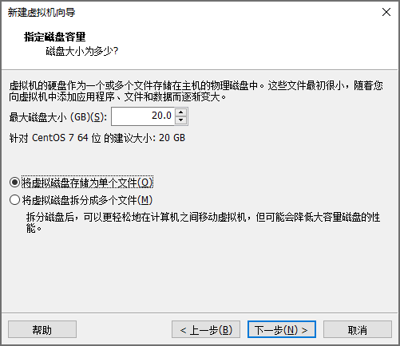
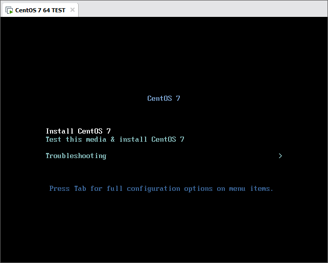

在VM上安装CentOS7
安装CentOS
- 


- 


安装MobaXterm
MobaStart.cmd
REM Step1: 删除目录“%UserProfile%\Documents\MobaXterm” REM Step2: 在“MobaXterm.exe”所在目录下建立“MobaStart.cmd” REM Step3: 双击运行“MobaStart.cmd” @ECHO OFF CD /D %~dp0 SET LocMobaXterm=.\tmp SET DocMobaXterm="%UserProfile%\Documents\MobaXterm" SET BinMobaXterm=MobaXterm.exe IF EXIST %DocMobaXterm% ( START "" %BinMobaXterm% ) ELSE ( REM 关联配置 IF NOT EXIST %LocMobaXterm% MKDIR %LocMobaXterm% MKLINK /J %DocMobaXterm% %LocMobaXterm% REM 桌面图标 CALL :SHOUTCUT MobaXterm "%CD%\start.cmd" "%CD%\MobaXterm.exe" ) GOTO :EOF :SHOUTCUT @SET VBSCript="%Temp%\###$%RANDOM%_SHOUTCUT_%RANDOM%$.vbs" @ECHO Set argv=WScript.Arguments>%VBSCript% @ECHO Set s=WScript.CreateObject^("WScript.Shell"^)>>%VBSCript% @ECHO Set l=s.CreateShortcut^(s.SpecialFolders^("Desktop"^) ^& "\" ^& argv^(0^) ^& ".lnk"^)>>%VBSCript% @ECHO l.TargetPath = argv^(1^):l.IconLocation = argv^(2^)>>%VBSCript% @ECHO l.Save:Set l = Nothing:Set s = Nothing:WScript.Quit>>%VBSCript% @cscript //nologo %VBSCript% "%~1" "%~2" "%~3" DEL /F /Q %VBSCript% GOTO :EOF
获取虚拟机IP
获得虚拟机IP的目的是方便在真机环境中使用SSH协议登录。
localhost login: root
Password:
Last Login: ...
[root@localhost ~]#
cd /etc/sysconfig/network-scripts; ls -l ifcfg-* # -rw-r--r--. 1 root root 279 6月 13 2020 ifcfg-ens33 # -rw-r--r--. 1 root root 254 3月 29 2019 ifcfg-lo enscfg=ifcfg-ens33 tail -n 2 $enscfg # DEVICE=ens33 # ONBOOT=no sed -i '/ONBOOT/s/no/yes/' $enscfg tail -n 2 $enscfg # DEVICE=ens33 # ONBOOT=yes systemctl restart network yum -y install net-tools ifconfig
ens33: flags=4163<UP,BROADCAST,RUNNING,MULTICAST> mtu 1500
inet 192.168.???.??? netmask * broadcast *
...
关闭SELINUX
# getenforce # 获取状态 # setenforce 0 # 临时关闭 # vi /etc/selinux/config # 永久关闭 SELINUX=disabled sed -i '/SELINUX/s/enforcing/disabled/' '/etc/selinux/config' more '/etc/selinux/config'
设置本地源
将安装镜像挂载为驱动器，并利用Nginx提供服务，使真机成为下载服务器。该步骤并非必要程序，进行此操作可在无网络环境下继续进行常用应用的安装。
Step1：（真机环境）获得真机地址
ipconfig REM 以太网适配器 VMware Network Adapter VMnet1: REM REM ... REM 自动配置 IPv4 地址 . . . . . . . : <IP1> REM ... REM 以太网适配器 VMware Network Adapter VMnet8: REM REM ... REM 自动配置 IPv4 地址 . . . . . . . : <IP2> REM ... REM （管理员）允许真机被Ping netsh advfirewall firewall add rule name="ICMP V4 Echo Request" protocol=icmpv4:8,any dir=in action=allow REM （管理员）调试完成后删除规则 netsh advfirewall firewall delete rule name="ICMP V4 Echo Request"
Step2：建立本地仓库
www/files/centos7
│ BUILD.bat 详见下文
│ RPM-GPG-KEY-CentOS-7 AUTO_COPY
│ RPM-GPG-KEY-CentOS-Testing-7 AUTO_COPY
│ test AUTO_BUILD
│
├─Packages AUTO_LINK
├─repodata AUTO_BUILD
│ <sha256>-primary.xml.gz
│ <sha256>-other.sqlite.bz2
│ <sha256>-filelists.sqlite.bz2
│ <sha256>-c7-x86_64-comps.xml.gz
│ <sha256>-c7-x86_64-comps.xml
│ <sha256>-primary.sqlite.bz2
│ <sha256>-filelists.xml.gz
│ <sha256>-other.xml.gz
│ repomd.xml
│ repomd.xml.asc
│ TRANS.TBL
│
└─repofiles
local.repo AUTO_BUILD
BUILD.bat
REM 【建立本地缓存】 REM Param1：镜像挂载磁盘 @SET DVD_ISO_DRIVE=G: REM Param2：真机地址（VMnet1.IP） @SET SERVER_DOMAIN=192.168.202.1 REM Param3：文件目录 @SET HTTP_CENTOS_URL=/files/centos7 @ECHO OFF CD /D %~dp0 IF NOT EXIST "%DVD_ISO_DRIVE%" ( ECHO 没有挂载镜像文件！ PAUSE>NUL EXIT ) REM 建立测试文件 IF NOT EXIST .\test ECHO OK>.\test REM 映射Packages IF NOT EXIST .\Packages ( MKLINK /J Packages "%DVD_ISO_DRIVE%\Packages" ) ELSE ( RMDIR .\Packages 2>NUL && MKLINK /J Packages "%DVD_ISO_DRIVE%\Packages" ) REM 拷贝RPM-GPG-KEY-CentOS XCOPY /Y "%DVD_ISO_DRIVE%\RPM-GPG-KEY-CentOS*" .\ REM 拷贝repodata IF NOT EXIST .\repodata ( MKDIR .\repodata XCOPY "%DVD_ISO_DRIVE%\repodata" .\repodata REM 修正repodata PUSHD .\repodata ECHO Sub print^(item^):Wscript.Echo item:End Sub:Set XML = CreateObject^("Microsoft.XMLDOM"^):Set FSO = CreateObject^("Scripting.FileSystemObject"^):XML.load^("repomd.xml"^):Set objNodes = XML.SelectNodes^("/repomd/data"^):For Each objNode in objNodes: h = objNode.SelectSingleNode^("./checksum"^).text: h = Trim^(h^): f = objNode.SelectSingleNode^("./location"^).GetAttributeNode^("href"^).nodevalue: f = Trim^(Split^(f, "repodata/"^)^(1^)^): If FSO.FileExists^(h^) Then: print h: FSO.MoveFile h, f: End If:Next>.\_.vbs cscript .\_.vbs POPD ) REM 建立仓库文件（用于wegt获取） SET repo_url=http://%SERVER_DOMAIN%%HTTP_CENTOS_URL% set repo_gpgkey=RPM-GPG-KEY-CentOS-7 IF NOT EXIST .\repofiles ( MKDIR .\repofiles PUSHD .\repofiles ECHO [LocalDVDISO]>.\local.repo ECHO name=Local DVD-ISO Packages>>.\local.repo ECHO baseurl=%repo_url%>>.\local.repo ECHO enabled=1 >>.\local.repo ECHO gpgcheck=1 >>.\local.repo ECHO gpgkey=%repo_url%/%repo_gpgkey%>>.\local.repo ) ECHO Everything is OK. PAUSE
Step3：（虚拟机环境）测试真机地址
# VMnet1.IP rip=192.168.202.1 # 测试1 ping -c 3 $rip # 测试2：启动Nginx后测试 yum -y install wget wget http://$rip/files/centos7/test; clear; more test; rm -f ./test
Step4：配置虚拟机
cd '/etc/yum.repos.d' if [ ! -d ./backups ]; then mkdir ./backups; mv ./CentOS-* ./backups 2>/dev/null || echo Nothing will be moved.; fi # mv ./backups/CentOS-* ./; rmdir ./backups wget -O ./DVD-ISO.repo http://$rip/files/centos7/repofiles/local.repo yum makecache